传统的事件响应侧重于修复发生故障的部分。但如果一次重大服务中断并非由任何单个组件故障引起，又该怎么办？本章将探讨 Google 如何采用系统思维与安全工程，以主动提升可靠性，在事件发生之前预测并预防它们。
2019 年一个不平静的日子里，如果你打开 Google 地图搜索日本境内的地点，很可能什么也找不到。和处理其他服务中断一样，SRE 收到告警后与产品开发人员协作，缓解了这起事件。问题解决、日本地图恢复正常后，我们撰写了一份事后复盘。这是一份质量很高的复盘：调查充分，对深层问题以及最终导致事件发生的过程给出了清晰、完整的说明；它也讨论了人的决策如何促成事件，但没有责怪任何人；此外，复盘还识别并排定了行动项的优先级，包括 SRE 在内的多个工程团队随后启动项目，防止同类问题再次发生。
发生这种事情当然不会令人高兴，但到这里为止，组织的事件响应和学习过程似乎都很成功。然而，仍有几个人放心不下。尽管复盘非常详尽，SRE 负责人和负责该系统的产品开发总监仍觉得，对问题的理解还不足以防止它再次发生。引发 Google 地图事件的决策过程极其复杂，其中有些难以理清之处值得进一步研究。他们尤其在意的是：事件发生时，软件并没有“坏掉”。事发前，系统中没有任何地方出现故障或错误。因此，除了调整若干流程并笼统地推动改进缓解手段之外，事后复盘并没有太多具体建议。
这起事件暴露了事后复盘、生产就绪评审、单元测试和集成测试等传统被动方法的局限。这些方法不可或缺，却不足以预见复杂的软件事件。把问题简单归咎于相关人员犯错很容易，但我们知道，这种做法既无力又有害。被动方法的局限在很大程度上源于事件致因模型，简称致因模型。致因模型是一组有关事件为何发生的观念。本章后面将会看到，我们运用一种新的致因模型，从日本 Google 地图事件中获得了重要洞见，并据此对系统作出了重大改进。
需要说明的是，在其他行业中，accident 指“造成损失的事件”，incident 则指“出现了不希望看到的状态，但没有造成损失”。软件行业的用法不同：前者通常称为 incident，后者则称为 near miss（未遂事件）。本章采用软件行业对 incident 的定义。
软件行业占主导地位的致因模型是线性事件链，它最早在近一百年前提出。在这一模型中，事件源于一连串组件故障，每个事件都会引发下一个事件。图 12-1把一次假想的生产服务事件拆成一系列事件，用以解释事件为何发生。图 12-1还列出了防止每次故障事件的措施，这种策略通常称为纵深防御。
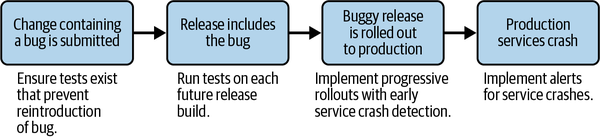
因果链中的第一个事件通常被指定为根因。因此，此生产服务事件的根因是在代码中引入了一个错误。正如我们稍后将展示的那样，这种根因的分配有点武断，并且几乎总是可以将因果链延续到更远的时间——尽管有时这会导致无法轻易归类为事件的原因。基于一连串事件致因模型的事后复盘的重点是确定哪些组件表现“不正确”。因此，防止事件再次发生需要实施“打破”这一因果链的措施。
当事件链的指定根因涉及人的作为（或不作为）时，根因分析会变得棘手。即使组织奉行无责文化，不追究个人责任也不应妨碍我们理解个人为何采取某种行动。如果分析止步于“提交了含有缺陷的变更”，学习就还不完整。真正衡量学习成效的是纠正措施是否有效。因此，我们应提出更精确的问题：仅仅确保测试能够捕获某个特定缺陷，真的能防止今后发生类似事件吗？
事件链模型的主要局限性在于其错误的假设，即事件的顺序意味着致因。在复杂系统中，消除先前的事件不足以防止后续事件，因为可能还有其他方法可以发生该事件。此外，虽然时间轴描述了发生的事情，但它未能解释事件背后的因果因素。复杂事件的致因比简单地确定哪个事件发生在另一个事件之前更微妙。
例如，工程师为什么会提交含有缺陷的代码？原因可能是多种因素共同作用，例如：
工程师的编码能力
工程师的心智模型（即对系统工作方式的理解，包括发布与上线流程）
公司采用的软件开发实践（如测试和代码评审）
公司采用的软件开发工具
代码本身的复杂性
环境压力，例如上线期限或工作压力
基于事件链致因的分析很少提出这些问题，因为它们的主要目的只是找出根因。这反映了人类对复杂事件寻找简单解释的冲动，有时被称为根因诱惑。 2 这种思维方式中的缺陷 是，因果因素往往不能排列成线性链。
下面我们将介绍另一种模型，用来理解事件或事件为何发生。
前文已经说明，事件链致因模型不足以分析当今高度复杂的系统，尤其是可能包含数十亿行代码的软件系统。我们需要一种现代致因模型，而系统理论恰好提供了一个有效模型。
系统理论自 20 世纪 50 年代起逐渐受到重视。当时，人们认识到：把日益复杂的系统拆成一个个组件，并不能完整分析系统的性质。服务、产品、基础设施以及软件公司中与它们交互的人等众多组件相互作用，会产生一些系统层面的属性，通常称为涌现属性。只有分析整个系统，而非孤立的组件，才能理解这些属性。特别重要的一点是：安全是一种涌现属性。例如，只看一份 API 规范，无法判断它是否安全；还必须了解 API 所处的系统，以及它在系统中的使用方式。换言之，要真正预见 API 可能引发的事件，就必须把它放到整个系统的上下文中考察。
系统理论事件模型与过程（STAMP）是一种现代致因模型。它不把事件归因于一条事件链，而是归因于系统设计未能安全约束各组件的行为。在 STAMP 中，一个事件源自影响组件行为的多个致因。致因是系统设计中可能导致人或自动化系统做出不安全行为，并可能引发事件的要素。STAMP 从根本上否定单一根因的观念：事件很少只由一次人为失误或一个组件故障造成，更常见的原因是系统设计缺陷允许不安全行为涌现。因此，人和软件的错误只是症状，而不是原因；要预防这些错误，必须关注人和软件所在的更大系统。
图 12-2用我们之前介绍的假设生产服务事件来说明这一点。
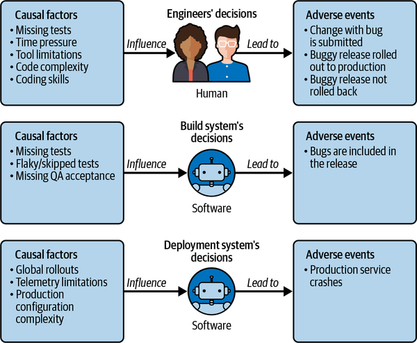
任何事件都可以标注时间戳，从而按时间顺序排列。但必须注意，与线性事件链不同，时间上的先后顺序并不表示事件之间存在因果关系。
在这个假想的生产服务事件中，哪些致因可能导致含缺陷的版本上线？按照 STAMP 模型，工程师的决定本身不是致因；是系统设计使各种致因得以影响他们的决定。例如：
测试缺失，导致工程师未能发现缺陷。
代码库过于复杂，评审者无法有效判断服务行为发生了哪些变化，因而没有发现缺陷。
全球范围上线，使工程师直到为时已晚才了解到缺陷的影响。
管理层推动新功能采用激进的上线计划。
有了更适合当今复杂软件系统的致因模型，还需要以它为基础分析系统安全的方法。这里可以采用两类方法：危害分析面向未来，力图找出某种系统设计可能以哪些方式导致事件或事件；事件分析则回顾过去，力图查明事件或事件为何发生。
基于STAMP的前瞻性方法是系统理论过程分析(STPA)。 STPA是一种自上而下的危害分析方法，可以识别系统性缺陷，而不只是组件故障。 如STAMP所定义，核心思想是，由于在一个复杂的系统中对相互作用方式的控制不足而发生事件。想想假想生产服务事件：人类与软件之间，然后在内部大型软件系统之间，有许多相互作用，使得事件得以发生。 在每一个互动点上，系统设计本可以施加约束，防止进一步损害。STPA中的关键思想是，你可以仔细研究这些相互作用，在任何不良后果发生之前找出并应用适当的约束。
STPA 是一种主动评估系统安全性的方法，其独特之处在于：即使系统还只是一份纸面设计，也可以开展分析。稳健的系统设计应当做到，即使工程师试图提交含有缺陷的代码，也不会造成不可接受的结果。
基于STAMP的后视法是基于系统理论(CAST)的因果分析。 CAST将事件分析(或事后复盘)的目标从寻找失败转向找出整个系统为何未能阻止事件发生。 CAST 在三个重要方面与其他事后复盘方法不同：
它力图理解系统设计为何会容许不安全行为，把致因看作组件交互产生的复杂过程，而不是一条线性链。
它不责怪个人，而是关注当时的决定为何看起来合理，以此解释事件。CAST 与无责事后复盘文化相契合。
它关注系统设计，把人为错误视为设计缺陷的症状，而不是事件的根因。
CAST 能帮助我们深入理解致因，从而重新设计系统，改变或消除导致事件的行为。
表 12-1总结了 STPA 与 CAST 的区别。以下各节将进一步介绍这两种方法，并通过示例说明其用法。
| STPA | CAST | |
|---|---|---|
| 分析重点 |
危害分析方法 |
事件分析方法 . |
| 前瞻还是回顾 |
前瞻性：在事件发生前加以预见 |
回顾性：分析已经发生的事件为何出现 . |
谁参与 |
在分析期间，与系统负责人(领域专家)合作 |
在分析期间，与事件所涉人员合作，包括与所涉系统的所有人合作 |
| 范围 |
现有生产系统和拟采用的系统设计 |
事件发生时的系统 |
在这里，我们介绍 高级综述STPA的四个步骤。 我们将利用假想的生产服务事件来说明这一过程的某些部分。
在第一步，我们 分析的范围，并界定系统必须避免的不可接受的结果。 分析的范围包括确定投资于该系统的利益攸关方，包括SRE、开发商、公司、客户、用户等。 然后，这些利益攸关方确定本系统的总体目标，以及 B。 损失或不可接受的结果，他们想要避免。 对许多软件产品来说，这些是高层次的商业成果，如丧失实现系统目标的能力——我们通常称之为 " 高水平 "。 任务损失例如，如果Google 地图用户丧失在现实世界中导航的能力，就会失去使命。 其他损失包括收入损失，品牌信任损失等。
这一步接下来要识别危害状态。危害状态是指在最坏条件下可能导致损失、且能够被检测到的系统状态。对 Google 地图而言，“已发布的地图与现实世界不一致”就是一种危害状态。它不一定会造成损失——例如，如果我们及时发现并在影响用户前纠正，就不会产生损失——但持续时间越长，造成负面影响的可能性越大。关于危害状态及其对 SRE 的价值，参见 Tim Falzone 和 Ben Treynor Sloss 的《;login:》文章《Google SRE 的演变》。
第二步是建立分层控制结构，简称控制结构，用它描述系统中的功能行为。这是它与软件工程中其他常见模型的关键区别。SRE 通常创建和使用的是结构模型，描述相互连接的服务之间的层级或数据流。抽象的功能模型则用于捕捉行为，把服务于同一行为目标的不同结构元素归为一组。例如，可能有五个不同团队都能向运行中的服务器部署更新。从功能角度看，可以把它们合并为一个负责部署更新的抽象实体，尽管这些团队的组织方式、使用机制和获得的反馈各不相同。
STPA将这些抽象的功能实体控制器称为。 每个控制器都有责任防止某些危害状态。 例如，Google 地图中必须有一个控制器，负责确保所发布的地图与真实世界一致。为了决定要采取什么行动，软件和硬件控制器有一个控制算法——例如如何更新已公布的模型——人类执行决策。 控制者对于系统状态也有一种目前的信念，称为过程模型(或对人类来说，称为心智模型)——例如认为所发表的模型目前与现实世界一致。请注意，这种信念有时可能不正确!
每个控制者采取行动——在STPA中称为控制动作——以履行其职责。 这些行动是根据控制算法和心智模型或过程模型(正确与否)采取的，这些模型由反馈更新。 决策的安全性取决于控制算法或决策的正确性，以及心理或过程模型相对于真实系统状态的准确性。这种准确性取决于更新该模型的反馈(即是否正确、完整和及时)。
以假想的生产服务事件为例，让我们看看控制结构的基本构件：单一的控制-反馈循环(显示在图 12-3中)。 具体地说，我们将审查是否在包含错误的发行版本被发布之后，将生产服务回滚到以前的软件版本的决定。
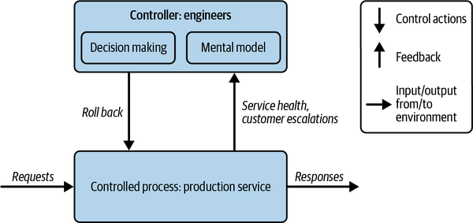
这个简单回路包含一名人的决策者（“工程师”控制器），负责控制系统的一部分（“生产服务”受控过程）；这就是需要分析的全部内容。典型控制结构由多个这样的控制—反馈回路组成。本例中，工程师（可能是产品开发团队、SRE 或两者共同参与）按照一套流程决定何时回滚到上一版本。例如：
如果我看到告警与客户升级同时表明生产服务不健康，并很快确认问题出现时间与最近一次版本上线相关，
那么我就回滚最近的版本，因为我认为这样可以缓解事件。
稍后在步骤 3 中，我们会全面分析：在什么情境下，回滚决定会使系统进入步骤 1 定义的危害状态。不过，仅凭这个简单模型也能看出，决定是否安全取决于工程师如何判断生产服务的状态，也就是他们的心智模型。该模型由来自生产环境的反馈形成，包括错误响应和客户升级。是否回滚还取决于决策时采用的依据（如流程、操作手册和专家知识），并直接受到维护服务性能目标（可用性、延迟等）这一职责的影响。当生产服务的当前状态损害这些目标时，回滚通常是必要措施。
假设生产服务实现了一个 API，系统的主要目标可以概括为“满足 API 请求”。为此，生产服务必须满足若干条件：在规定延迟范围内响应所有客户端请求；确保响应符合 API 规范；把服务端错误码比例维持在较低水平；保证响应数据正确且新鲜，等等。
如果没有工程师控制生产服务，软件缺陷、网络或硬件中断等环境条件、异常请求（如过大的请求或未经授权的请求）等都可能使系统偏离目标。可以把控制器理解为通过约束受控过程的行为，确保系统实现目标。控制器既有自身要实现或维持的目标，也在系统中承担职责，并通过约束受控过程履行职责。本例中，工程师负责确保生产服务对请求返回无错误响应；一种约束方式，就是把持续报错的生产服务回滚到上一版本。
即使不再继续开展 STPA 分析，这个模型也包含结构化网络模型所没有的丰富信息。动态反馈回路帮助我们思考为什么会发生回滚。我们可以把这一抽象功能模型与真实系统对照，并提出以下问题：
系统中谁负责执行回滚？是一个人或团队，还是多个主体？
这些主体采用的决策流程是否相同？
他们决定是否回滚时，考虑的标准是否相同？
他们收到的反馈是否相同？
步骤 3 正式运用这类提问，探索决策可能出错的所有方式。我们逐一分析模型中的每项控制动作（决策）。情境至关重要：同一个控制动作在不同情境下可能安全，也可能不安全。STPA 只关注控制动作可能导致步骤 1 所识别危害状态的情境，并把它们称为不安全控制动作（UCA）。
决定是否把生产服务回滚到上一版本，本身既谈不上安全，也谈不上不安全。但当当前版本产生的错误超过可接受水平时仍不回滚，就会造成危害，并违背系统“满足 API 请求”的目标。控制动作的时机也必须考虑：视情境而定，动作过早、过晚或持续时间不当都可能不安全。
研究系统中的所有控制动作，可以帮助我们预见其他可能促成事件的不安全控制动作。
最后，在步骤 4 中构建致因场景。系统中的软件控制器或人为什么会采取步骤 3 识别出的不安全控制动作？他们是否收到错误反馈，或者安全决策所需的反馈完全缺失？他们对系统当前状态的过程模型或心智模型是否不准确？如果是，原因是什么？他们是否本想采取正确行动，却因通信中断导致安全动作被覆盖或丢失？也可能他们做对了，但系统以意外且不安全的方式响应。
对于这个假想的生产服务事件，我们识别出一个不安全控制动作示例：
当服务返回的错误超过可接受水平时，工程师没有将其回滚到上一版本。
工程师可能知道，也可能不知道这些错误；本例假定他们知道。因此，场景是：工程师明知服务存在错误，却没有回滚。接下来可以把这一场景交给系统专家，共同分析为什么会出现这种情况。可能的原因包括（但不限于）：
工程师习惯先调试问题，而调试耗时无法确定；他们没有先立即回滚、事后再调试。
工程师知道系统已经发生变化，上一版本与当前系统不兼容，唯一选择是向前发布修复，而这需要时间。
工程师没有把生产服务回滚到上一版本所需的权限。
发布系统刚刚上线，工程师还不熟悉生产服务的新回滚方式。
这些致因场景准确描述了事件可能怎样发生。有了场景清单，就可以排定优先级，设计能高效覆盖场景空间的方案，以预防整类事件；同时也能审慎决定哪些场景只需检测后人工处理。最终目标是确保系统不会遭受步骤 1 所列的任何损失。
下面通过一个真实案例，说明如何把这一模型应用于事件分析。
继一起重大事件后，回溯CAST由于其速度快而成本更低而成为快的技术环境中的典型分析选择。 影响这一点的因素包括：
CAST 只需要直接了解事件或相关系统的领域专家，因此参与者较少。相比之下，STPA 往往需要不同团队和角色更广泛地参与，获得管理层批准的门槛也更高。
CAST 聚焦于促成特定事件的具体决策，属于纵深分析；STPA 则兼顾深度与广度，分析所有可能造成危害的决策。
不过，本节讨论的事件选择了 STPA。团队想验证 STPA 能否发现事后复盘所发现的同样缺陷；更重要的是，能否通过一种可在事件发生前主动应用的前瞻性方法获得这些洞见。团队还希望更深入地理解事件涉及的危害，以识别其他危害和致因场景，进而预防未来事件。他们请 STPA 专家、MIT 系统化安全与保障方法合作项目执行主任 John Thomas 博士指导，并花了数周学习和实践 STPA。John Thomas 博士
在概述地图数据更新审批流程的 STPA 分析之前，先回顾这起事件的经过。
2019 年，Google 开始把日本地图的数据源从第三方数据迁移到 Google 自有知识产权数据。表面看来，这起地图事件是 Google 大规模更新日本行政区划（如都道府县和市级区划）地物后发生的。这些地理要素是一组嵌套多边形，包含日本境内的其他所有地物。也就是说，地图上的学校、道路、公园、办公楼等都与这些行政区划要素存在关联。搜索时会利用这些关联返回正确结果。例如，某个地物可能位于大阪府中央区，而大阪府又位于日本关西地区。事件发生时，地点与其所属行政区划之间的关联全部被删除。没有这些关联，搜索结果轻则令人困惑，重则完全错误。
更新地图数据是一个动态过程。地物更新后，每日修复流水线会对地图当前状态生成快照，验证地物之间的关联，并在必要时添加、删除或更新关联。在这起事件中，更新日本行政区划的人员有意删除了学校、道路等地理要素与对应行政区划要素之间的全部既有关联。理由很充分：鉴于更新规模，与其手工重建关联，不如先清空，再让修复流水线自动重建，看起来更安全。团队知道有些地物会暂时失去行政区划关联，因而无法出现在搜索结果中，但他们以为每日修复流水线会立即运行并恢复关联。从团队视角看，更新后的地物本身是正确的。事件之所以发生，是因为：
让我们看看团队如何利用STPA更深入地审查地图数据更新批准程序并发现更多的致因。 以下陈述取自STPA 分析团队的观点。
在步骤 1 中，我们识别出以下危害：
已发布的地图与现实世界不一致。
删除全部行政区划关联的那批更新应用后，地图数据更新审批流程进入了这一危害状态。同样，只有在特定条件下，危害才会造成损失；本例的条件是用户搜索日本境内某个与行政区划失去关联的地物。我们可以设计系统来防止进入这种状态；如果做不到，至少也应确保能检测到危害并迅速缓解。
在第二步中，我们为系统建立了一个控制结构。 我们模拟了关键软件和人类控制， 与许多复杂的系统一样，人类也在系统设计的周边做出重要决定。 图 12-4 显示控制结构的一部分，用于模拟人类地图数据更新批准程序。
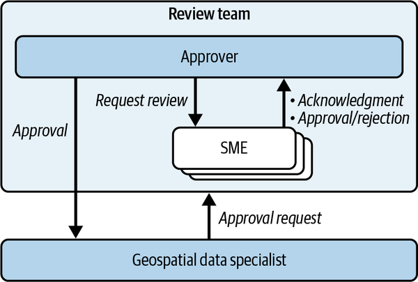
复杂的地图数据更新要经过多个团队参与的评审和审批流程。首先由地理空间数据专家准备变更，完成后提交给评审团队。评审团队包含两类成员：审批人和领域专家。审批人最终负责决定是否发布变更，并常与更新所涉及地区的本地领域专家合作，确认变更正确。
地理空间数据专家负责处理特别棘手、通常规模很大的变更，这些变更必须经过认真准备和评估。前述日本全部行政区划更新就是一例。专家进行了多轮数据评估，以确认更新后日本地图仍然正确。认为变更可以提交后，他们按常规流程请评审团队批准发布；评审者又联系驻日领域专家协助核实变更。这组地理空间数据专家、审批人和领域专家之间的关键交互此前从未建模，也未纳入事件后的事后复盘，但 STPA 对其进行了分析。
为分析控制结构中的这一小部分，我们逐一检查模型中向下箭头所表示的控制动作，并为每个操作写出会导致危害状态的情境，由此形成不安全控制动作清单。
针对“批准”这一操作，我们得到的一个不安全控制动作示例是：
审查组的批准人在数据更新时予以批准 没有 由领域专家批准。
如果领域专家尚未批准变更，评审团队就批准发布，是不安全的。这一不安全控制动作可能使地图进入与现实世界不一致的危害状态。
写下这个不安全控制动作时，我们觉得它不太可能发生：评审团队为什么会这样做？但在步骤 4 提出这个问题后，我们得到了一些很有意思的答案。
步骤 4 逐一分析每个 UCA，并构建具体的致因场景，解释它们可能怎样发生。图 12-5 的带注释控制结构说明，STPA 如何系统地产生问题，并由此发现系统缺口或薄弱点。本例既可以询问审批流程，例如“评审者在批准前需要知道什么”，也可以询问领域专家的反馈，例如“反馈迟到或不完整会怎样”。控制结构帮助我们围绕更新审批这一动态过程的各个方面组织并提出问题。图 12-5图 12-5
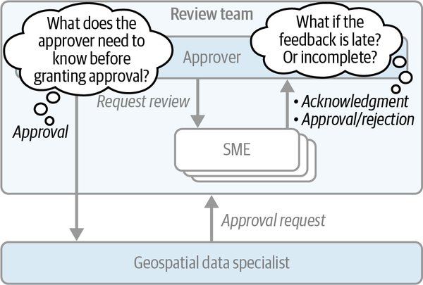
构建这些致因场景时，我们与一名评审团队成员讨论审批流程，并询问：在没有得到领域专家明确批准的情况下，评审团队是否可能批准发布数据更新？答案令人意外。团队有一项不成文但约定俗成的流程：争取在 24 小时内收集变更反馈；如果期间无人提出异议，就批准变更。他们解释，这项流程是在提高地图数据新鲜度的压力下逐渐形成的。
继续深入调查后，我们发现评审团队还依据一些重要假设开展工作。步骤 1 提到的一项假设是，任何问题都能迅速识别并纠正；另一项是假定地图加入新数据后，数据质量总体上会提高。这些假设与系统实际能力并不一致，因而都在一定程度上错误。产品开发团队对大规模数据更新经历了多少验证和审查也有错误认识，误以为当时的防御性检查足以应对任何有问题的数据更新。
这些发现出乎意料，却解释了地图事件为何发生。地理空间数据专家准备并评估了日本地物的大规模更新，随后交给评审团队审批。评审团队又请日本的领域专家协助评审。美国评审者在周四发出请求，请求周五到达日本，而当天恰逢假日；领域专家直到下周才看到。周一上午审查变更后，他们立即回复不应提交更新，因为按其经验，自动修复缺失关联可能需要数天。这与评审团队和地理空间数据专家最初认为“更新应用后关联会很快修复”的假设直接矛盾。
然而，美国这边的 24 小时已经过去，评审团队早已批准更新。日本专家的反馈到达时，地理空间数据专家已经开始提交变更，系统也已处于危害状态一段时间。
结果显然不对，事后也很容易看出决策的问题；但此前从未有人记录这些情况，也从未有人提出这些问题，直到我们决定开展 STPA。软件当然应尽可能稳健且有韧性，但如果人的决策流程本身不安全，我们就处于明显劣势。从评审流程入手，我们找到了多种强化方法，再加上 STPA 推动的其他系统改进（例如监控并告警数据不一致），最终使系统整体设计比分析前安全得多。
整个 STPA 分析由两名工程师在一名专家支持下兼职完成，历时五周。我们分析了 30 多个主要软件子系统，并研究十多个工程团队之间的交互。STPA 识别出 56 个表明系统存在缺口的致因场景。我们把这些缺口与历史事件对照，尤其是数月前的日本地图事件。STPA 几乎识别出事后复盘发现的全部缺陷；它额外发现的缺陷还可能导致至少四起其他重大事件，以及许多中小事件。
由于STPA确定了如此多的情景，它提出了更多改进地图数据更新批准程序的建议——34，而事后复盘只有7个。 这使得产品开发者能够设计出涵盖更多情景空间的有效解决方案。相形之下，为了解决事后复盘发现的相对较少的缺陷，花费了类似的精力，可能使许多STPA情景得不到缓解。
相对于投入，回报率非常可观。这还是我们开展过最慢的 STPA 项目之一，因为团队边做边学。此后，随着经验积累和流程简化，回报率进一步提高。更重要的是，我们已经能在复杂软件系统的设计缺陷引发事件之前，主动识别并修复它们。
事后复盘长期以来一直是 Google SRE 文化的核心。任何开展复盘的软件公司都有充分机会从事件中学习，而在人与技术共同构成的系统中，致因可能极其复杂。即使许多公司在复盘上投入大量时间和精力，事件仍会持续发生，让人感觉总在处理一个个症状，却没有触及深层原因。3
这种局面并非源于技术能力不足，也不是因为不愿深入调查，而是因为采用了事件链等不充分的事件致因模型。如果相信事件只是在线性链上前后相继，分析就只会追问这条链为什么没有被截断，并忽略无法表示成事件的其他原因。不充分的致因模型会限制分析，继而妨碍学习。结果可能是，我们信心十足地制定了只处理症状、却没有触及事件真实原因的改进计划。
如前所述，STAMP 致因模型更适合现代软件生态这类高度复杂的系统。CAST 是一种基于 STAMP 的回顾性事件分析（事后复盘）方法，把分析目标从寻找故障，转向探究整个系统为何没能阻止事件发生。
本节介绍我们如何把 CAST 应用于另一起 Google 地图事件。
2024 年的一天，我们开始收到用户报告：Google 地图显示的美国城市名称不正确，后面还附加了文字。例如，用户看到的不是简单的“Louisville”或“Indianapolis”，而是“Louisville/Jefferson County metro government (balance)”和“Indianapolis city (balance)”。
SRE 响应并解决事件后，工程师开展了事后复盘。如前一个案例所述，Google 地图会在导入数据之前，由内部地理空间数据专家评估来自内外部的所有数据，以保持准确性。复盘发现，“(balance)”标记来自导入 Google 地图的一份美国人口普查局数据集。图 12-6 用传统事件链模型展示了事件发生前后的过程。图 12-6
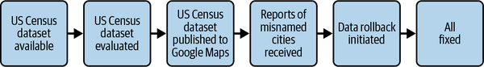
事后复盘详细描述了各个事件：
美国人口普查局发布了一份包含美国城市名称的新数据集。
地理空间数据专家评估和批准了用于 出版物。
用户开始报告城市名称错误，触发了事件响应。
我们对整个数据集启动了回滚。
所有错误城市名称最终都得到纠正。
复盘识别出两个根因。第一个是数据抽样不完善。由于数据量巨大，无法全面人工审查，地理空间数据专家只检查了自己熟悉的四个州（WA、CA、TX 和 NY）。如图 12-7 所示，这个样本没有覆盖出现错误城市名称的六个州（MT、KS、IN、KY、TN 和 GA）。图 12-7
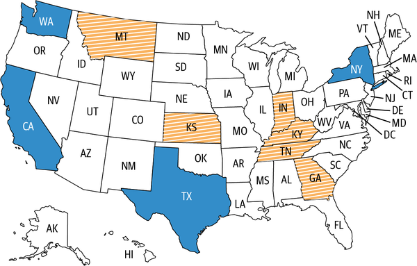
事后复盘识别出的第二个根因是评估工具不足。地理空间数据专家用来检测数据集问题的内部工具，并不是为检测错误城市名称而设计的。
事后复盘提出了以下建议：
在评估工具中自动检测错误的城市名称。
实施程序化检查，防止数据库存储无效的城市名称。
明确说明如何在工具中启用特定检查，例如标记“/”或“(”等特殊字符。
事后复盘的建议直接针对已识别的根因。不过，与“将 STPA 应用于地图数据更新审批流程”的示例一样，团队推测进一步分析会发现复盘遗漏的其他致因和设计改进机会，因此决定开展 CAST 分析。“将 STPA 应用于地图数据更新审批流程”
本节分析误名城市事件作为案例研究，以说明CAST中的每个步骤是如何被应用的。
CAST 的第一步是收集事件的基本信息，确定分析范围。与 STPA 一样，这一步有两项关键产出：
事件中实际发生的不可接受结果
在最坏条件下可能导致损失的系统状态
这一步先按时间顺序编制事件初始时间线，再以时间线为依据提出有关事件的一般问题，同时避免归责。
与事后复盘类似，CAST 分析也形成了关键事件时间线和若干初步问题，例如：
为什么只评估四个州？这四个州是如何选定的？
为什么内部没有发现这个问题？
响应人员有多大把握确认所有错误城市名称都已修复？
后续阶段又提出了更具体的问题。
这起事件的危害与前面的 STPA 示例相同：
已发布的地图与现实世界不一致。
不过，后文将会看到，这起事件的致因并不相同。
前文已经说明，STAMP 把复杂事件视为控制结构失效的结果。在 CAST 中，我们为事件发生时的系统控制结构建模，重点关注各控制器的职责。职责含混或不一致，往往指向关键致因。
误名城市事件发生时的控制结构如图 12-8所示。
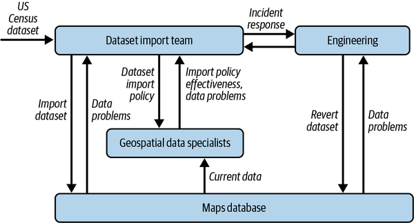
前面的 STPA 示例只展示了相关控制结构的一部分，即单个控制—反馈回路。这里可以看到，完整控制结构由多个控制—反馈回路组成，而且通常有多层层级。控制结构越往上，权限越大，因此数据集导入团队和工程控制器拥有最高权限。
在 CAST 中，必须明确每个控制器与事件相关的职责。对于城市名称错误事件，具体如下：
Google 地图对现实世界的模型是受控过程。分析主要调查该模型为何写入了错误城市名称并进入危害状态。为此，我们把地图数据库视为包含全部相关城市数据，而不考虑底层采用何种存储机制。
地理空间数据专家团队负责使用评估政策和工具，在候选数据集导入地图数据库之前识别并报告其中的问题。
数据集导入团队负责制定导入政策、维护工具，并根据地理空间数据专家的评估授权导入数据集。
工程师负责管理数据摄取基础设施和回退数据集。事件处理期间，他们就数据纠正向数据集导入团队提供建议。
我们假定每个控制器——无论是人还是软件——当时都有理由采取实际行为。这样可以避免妨碍学习的后见偏差和归责。正如 Nancy Leveson 的名言：“责备是安全的敌人。”责怪人的控制器、要求他们别再犯错或换人，都不能有效防止未来事件；让原决定看似合理的同一套系统，很可能让另一个人作出同样选择。4
理解不安全行为背后的致因，才能提出更有效的建议。与其只是要求人们“照章办事”，不如重新设计控制结构乃至整个系统，帮助他们作出更安全的决定。
单个控制器分析的第一部分，通过检查控制器的职责，以及其作为或不作为如何促成事件，来确定发生了什么。描述这些作用时应保持中立，避免使用“本应”或“未能”等带有主观判断、会引入后见偏差的措辞。
分析的第二部分解释行为为何发生，重点关注心智模型缺口和其他情境致因。对系统抱有错误认识等心智模型缺口会导致不安全决策；这些模型又常受反馈延迟、激励错位、培训无效、资源有限或目标冲突等情境因素影响。
如果控制器是软件，要解释其行为，就必须检查软件设计，以及设计者关于该设计如何确保安全行为的假设；事后看来，这些假设并不正确。
对城市名称错误事件的 CAST 分析，比事后复盘更完整地解释了致因。下面的边栏展示了对数据集导入团队进行单个控制器分析所得的部分结论。
请注意数据集导入团队在事件发生时抱有的信念和假设。事后复盘没有记录这些信息，而它们对于学习和提出真正解决系统性问题的建议至关重要。事后复盘还遗漏了以下致因：
导入政策没有集中记录可选工具，地理空间数据专家因而难以判断何时使用。他们不知道有一种工具本可检测特殊字符问题，因为政策没有要求使用它。
工具不支持搜索名称中含有“(balance)”的城市，事件响应期间只得临时编写脚本。
CAST 是一种可教授、可重复的方法；许多人已经用它成功发现传统事后复盘经常遗漏的致因。传统复盘并非绝不可能找到这些致因，但能否发现它们高度依赖复盘作者积累的经验。
CAST 的下一步是整体分析控制结构，目标是找出影响所有控制器行为、最终使系统进入危害状态并造成损失的系统性因素。由此得到的建议会超越单个控制器的不安全行为，更加有力。这一步可以参照常见的系统性因素类别。表 12-2 列出其中一些因素及其说明。5表 12-2
| 系统因素 | 说明 |
|---|---|
| 安全文化 . |
审查最高管理层影响促成事件的决定的基本价值观和文化假设。 |
| 沟通与协调 |
分析系统各组成部分之间的协调和沟通联系如何导致行动不一致、不充分或缺失。 |
| 变更管理 |
调查现有计划改革政策为何在防止这一事件方面没有效力。 |
| 安全信息系统 |
确定控制人员是否掌握了责任所需的完整和易于获得的安全关键信息。 |
| 环境变化 . |
评估造成这一事件的不受控制的环境变化。 |
图 12-9 展示了事件分层模型，突出了系统性因素对事件发生的关键影响。核心是不良事件；外围是产生这些事件的所有控制器行为，包括人和软件；再向外是塑造控制器行为的致因；最外层则是为这些致因创造存在条件的系统性因素。图 12-9
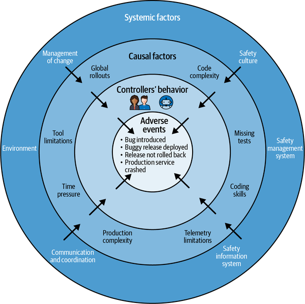
到目前为止，CAST 分析一直遵循这一分层模型：从事件本身开始，再分析各个控制器的行为。但只逐个分析控制器还不够。这样做或许能防止系统某一部分的不安全行为引发事件，系统性因素却可能同时对所有控制器的行为产生不利影响。
识别这些系统性因素，可以拓宽我们对致因的认识，并采取更有效的措施，预防一系列未来事件，而不只是正在分析的这一起。例如，只修复某个致因——如减少引入缺陷的那部分代码库的技术债——无法解决“开发速度优先于产品稳定性”这一系统性因素。此类因素还会在组织其他地方表现为不安全行为，例如设计评审流于表面或测试被忽视。
CAST 关注系统性因素，因此特别适合发现复杂组件交互产生的涌现缺陷。事后复盘往往沿事件链追溯，很少能识别 CAST 专门用于揭示的顶层系统性因素。
对城市名称错误事件的 CAST 分析识别出多个系统性因素，其中最关键的是环境变化。
事件经常发生在变更之后。本例最主要的系统性因素，是团队收到的外部数据集在数年间计划外地逐步增大。随着数据集增长，原本能有效处理它们的控制结构逐渐迁移到风险更高的状态，使现有控制越来越无效，并在整个系统中产生连锁影响。图 12-10 展示了这一过程。图 12-10
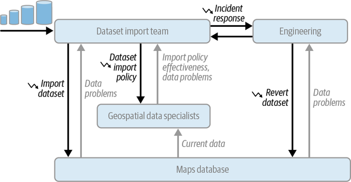
以下两个例子说明现有控制为何失效：
数据集不断增大，超出了地理空间数据专家导入政策的适用能力，而政策又缺少明确的抽样规则。庞大的美国人口普查数据集无法全面评估，团队于是偏离既定流程，转而依赖容易出错的人工检查。
地理空间数据专家所用评估工具的需求已经过时，导致工具在执行导入政策时无法有效处理日益增大的数据集。美国人口普查数据被拆成州级数据集后，原本用于发现大规模回归的工具错误地把每份数据都归类为“小型”。如果归类为“大型”，工具就会触发并排评估，从而可能发现城市名称问题。
随着时间推移，“系统设计可以处理任意规模数据集”这一假设被证明无效。要防止控制能力退化，就必须随着系统及其环境变化，持续监控并重新审视设计假设。
全面理解事件的致因和系统性因素后，下一目标是在组件和控制结构两个层面提出确保安全行为的建议。这种做法有几项主要好处：
建议覆盖所有已识别因素。
已经实施的建议可以清楚追溯到它所针对的致因和系统性因素。
可以按所针对因素的紧迫性，或成本等其他标准，为建议排定优先级。
为预防外部数据集不断增大所引发的一整类事件，CAST 建议关注整个数据集导入系统（控制结构），而不是个人行为。因此，CAST 的建议比事后复盘更多、影响更大，而且每项都可追溯到所针对的致因和系统性因素。建议包括：
每位 SRE 都明白，我们的水平最终要由最近一次重大事件检验。由此也产生一个难题：如何说明“确保什么都不出故障”的价值。成功的 SRE 团队不会只做被动响应，也不会等事情发生才开始工作。同时，我们会使用累计客户受损时长、某段时间内收到错误的独立用户数等可靠性指标，从用户视角概览系统可靠性。达到指标目标后，最难回答的问题之一是：“怎么知道这不只是运气好？”如何把 SRE 的工程工作与业务关心的结果联系起来？SRE 当然乐于受益于好运，但也知道“希望不是策略”。因此，我们投入大量精力开展审慎且有影响力的工程工作，设计系统以阻止问题触达用户，并尽可能从源头防止问题发生。
生产系统中安全工程（也可以称为“主动可靠性工程”）的现实挑战，在于系统极其复杂。SRE 介入时，系统的各个部分可能已有几十到数千名工程师参与。设计不断更新，运行环境持续变化演进；产品陆续上线，客户以意想不到的方式使用产品，工程师又以尽可能快的速度重新部署一切。
设想你能前往未来，观察系统可能经历的各种事件，再回到现在阻止这些故障。有了一组定义明确的潜在故障场景，就可以重新设计系统，消除其中大多数。剩余场景可能由不可控条件造成，因而无法避免；但你仍能设计有效的缓解措施来限制损害，并建立反馈渠道，帮助人和自动化系统准确判断当前情境需要哪种措施。还可以确保系统一旦开始以某种方式失效，后续操作都以尽量减小影响为目标。你会明确知道要监控什么、哪些告警应在什么阈值触发，以及要运行哪些测试来验证系统行为假设。
这些听起来也许像不可能实现的科幻故事，但与使用 STPA 开展全面危害分析所得的效果很接近。没有任何方法完美，不过我们已经看到，STPA 能比其他方法发现多得多的系统缺陷，尤其是涉及复杂系统交互的缺陷。
危害分析填补了 SRE 其他可靠性工程技术留下的空白，是补充而不是替代；组合使用时尤其强大。以灾难韧性测试（DiRT）为例，设计良好的测试会提供可操作信息，说明系统在故障发生时怎样响应。SRE 可以看到“数据库始终可用”或“配额管理器不可用时系统会失效开放”等假设遭到破坏的后果。“培训与实践”
DiRT 测试有效性的第一项限制是想象力。提出可测试的场景并决定执行哪些场景，更像艺术而非科学。我们常在严重事件后才意识到某项测试很有用，因为系统行为假设以最出人意料的方式被打破。当然，“开展 DiRT 测试的最佳时机是事件之前，其次就是现在”这句老话仍然成立。但 STPA 等危害分析技术可以揭示系统设计中的假设，让你在事件实际发生前获得设计和执行 DiRT 测试所需的全部信息。STPA 会给出可能导致故障的复杂动作序列细节，包括多步动作、多个控制器之间的协调、由反馈驱动的启动以及 n 阶间接影响。这组丰富数据用更严谨、更全面的方法，取代 DiRT 测试设计中开放式的想象过程。
把危害分析纳入 SRE 的另一个理由是，多数其他技术只能在系统建成后（至少也要到开发阶段之后）应用。设计文档无法接受 DiRT 测试，设计本身也无法注入故障。相比之下，即使设计还只存在于纸面，也能用 STPA 把系统建模为控制结构，像分析已实现系统一样寻找不安全行为。
在设计阶段发现问题显然更具成本效益，数据也充分支持这一点。项目进入运行阶段、系统已经在生产环境中运行后，识别和修复设计缺陷的成本会比需求或设计阶段高出多个数量级。例如，生产系统中的某个缺陷可能需要一个工程团队花整月理解、修复和部署，而在设计文档中也许只需一名工程师用一个下午修改。除了依靠经验发现问题，SRE 几乎没有其他可用于设计文档的工具。
多数 SRE 技术还有一个显而易见、因而容易被忽略的特点：传统技术都从故障开始。不幸之轮培训、故障注入和 DiRT 测试，起点都是某个组件失效或系统处于异常状态。但要真正预见系统失效的所有方式，就必须包含“没有任何组件故障，系统仍无法实现目标”的场景。Google 地图事件正是如此：执行更新的人遵循既定流程，软件也正常运行，却仍然发生了事件。STPA 这类自上而下的危害分析方法，能够识别组件都按设计工作、交互后却造成损失的情况。
最后，SRE 需要能够分析人的行动。人是系统中最复杂的组件之一，设计者却常试图把人推到边缘。事后复盘经常提出用自动化取代人工操作，但我们尚未在任何系统设计中彻底移除人——至少现在还没有。在成熟生产系统中，多年自动化已经消除了大量人工干预，剩余人的操作要么高度抽象，例如工程师只改动一项高层配置，系统便把它转换并展开为复杂的动作序列；要么属于例外，例如系统进入异常状态，需要人介入恢复功能。两种情况都会给人带来巨大压力：
在正常情况下（修改高层配置），我们要求人推演看似微小的变更所引发的复杂 n 阶影响。系统设计直接决定他们的行动能否成功。
在异常情况下（人必须修复系统的异常状态），我们要求他们迅速判断如何恢复系统。同样，系统设计会直接决定他们能否成功。
我们知道，可观测性是良好系统设计的关键组成部分。难点在于准确判断：人要掌握哪些信息，才能安全操作系统。STPA 可以帮助我们系统地探索人们需要了解哪些系统状态，才能作出安全决策。
虽然在传统的安全关键行业中证明，在重大事件发生后可以最大限度地学习CAST，但将它应用到我们极其复杂的软件系统最初具有挑战性。 在我们进行内部评估时，关于其在软件密集型系统的应用的外部文献很少。 这使得我们没有有针对性的指导，尽管在其他领域应用成功。
不过，在积累了用 CAST 分析多起事件的经验后，我们认为它非常适合揭示复杂软件系统中意外行为背后的致因。由于两项根本差异，CAST 的结论始终比传统事后复盘更完整。
第一，基于线性致因的传统事后复盘容易停留在表面，只关注事件链和根因。CAST 以 STAMP 致因模型为基础，会进一步考察塑造决策并导致这些事件的致因和系统性因素。
第二，CAST 关注系统性因素，因此其改进计划会直接反映结论的系统性和组织性。建议常会触及控制结构顶层的决策，也就是管理层和领导层作出的高层设计与政策决定；这些决定对控制系统行为最具杠杆作用。例如：
彻底改造内部流程。例如，城市名称错误事件要求全面重设计现有的数据集评估流程。其他例子包括重构端到端开发生命周期、改进 SRE 与产品开发团队的协作方式，或修订招聘评估标准。
重新配置人员并明确团队职责。例如，CAST 有时会发现，某次内部重组后职责分配不当，或相关职责未得到充分履行。
在全公司范围衡量事件后改进计划的影响和完整性。例如，可以衡量改进是否真正实施，以及实施后是否有效。
相比之下，基于线性致因的传统事后复盘所提建议往往局限于处理单个事件的症状。这些局部改进虽有必要，却不足以解决问题，因为它们没有触及深层系统性因素。典型建议包括：
补充缺失的测试，防止缺陷再次引入——但最初容许缺陷进入代码的开发实践怎么办？
把随叫随到支持转交给新团队，以确保服务可用性响应——但容许人手不足的团队接手关键业务服务的公司级支持模式怎么办？
修复导致 API 延迟增加的性能回归——但未能在公共 API 上线时强制落实性能目标的生产就绪评估怎么办？
事件事后复盘让你看到桌面上的泼洒物和碎玻璃。重点是收拾残局（修复事件），并在那一小块区域重新涂上保护层，希望同样的混乱不再发生。
CAST 不仅看到桌面的泼洒物和碎玻璃，还迫使你查看桌下，检查其结构基础。CAST 会问：“桌子为什么摇晃？支撑腿（控制结构）为什么没有对齐？我们为什么设计了一张注定会发生泼洒的桌子？”
最后，表 12-3 根据我们的实践，总结安全工程、STPA 和 CAST 与传统 SRE 方法的区别。表 12-3
| 传统 SRE 方法 | 安全工程(STPA/CAST) |
|---|---|
事件是不可避免的——投资于监测、工具和培训，以便在事件发生时迅速发现和减轻事件。 |
通过使用STPA来识别系统缺陷，然后优先处理并解决最糟糕的缺陷，然后才能引发事件，从而预想事件件。 |
做事后复盘和对调查结果采取后续行动——我们常常“治疗症状”(反应)。 |
从整体审视系统，找出并解决可能导致事件发生前的致因(主动)。 |
根据我们从经验中了解到的经过实践验证的最佳做法和生产原则设计系统，减少事件。 |
对设计进行危害分析，并查明必须解决的缺失要求/差距，以确保安全系统行为。 |
从下而上识别出问题，使用离散事件来识别整个系统的一般问题类别。 |
从上而下地找出问题，从系统正确运行必须满足的条件出发，在情况并非如此的地方找出系统行为的各个方面。 |
解决事后复盘发现的所有根因，希望这足以防止事件再次发生。 |
应用CAST来确定促成事件所作决定的因果因素和系统性因素——处理这些因素将防止整类事件。 |
无责的事后复盘文化确立了心理安全，从而最大限度地促进了学习。 |
建立既无责又重视分析的有效事后复盘文化：不评判个人行为，并用 CAST 找出影响其决策的因素。 建立既无责又重视分析的有效事后复盘文化：不评判个人行为，并用 CAST 找出影响其决策的因素。 |
本节总结我们向 Google SRE 引入前瞻性 STPA 和回顾性 CAST 时获得的经验。这不仅是引入两种技术，更是向系统思维的根本转变；许多工程师即使只参加一次分析，也会因此改变看待生产系统或设计的方式。
Google从应用STPA中获得了巨大的好处，即使是在有限的能力下也是如此。 日本事发后Google 地图分析是众多成功故事之一。 在Google发布STPA后， 我们致力于提高认识、培训、寻找赞助商，我们还从其他行业和学术界的支持者那里得知了通过STPA的挑战和有效战略。
向组织推广 STPA 的一大挑战，是它的价值不能立刻显现，也不容易理解。STPA 的价值多样而细致：系统思维带来新视角；新的软件系统建模方式加深理解；还能系统探索“未知的未知的未知”等。负责资源和资金决策的人在一个规划周期内会看到许多项目提案，15 分钟的 STPA 推介起初可能听起来像万能灵药，反而引发怀疑。许多行业的 STPA 倡导者花费数年才说服组织采用它；这并非孤例。
自上而下推动采用 STPA 时，一个关键卖点是在设计阶段应用它所获得的巨大投资回报。领导者普遍认识到，从事件中学习成本很高：一是收入损失、客户信任受损、监管风险等直接影响；二是通常更大的机会成本，因为工程资源从功能开发转去执行事后复盘补救任务。这揭示了事件的隐性成本：设计缺陷的成本会随时间呈指数增长。图 12-11 直观说明，缺陷发现得越晚，修复的机会成本越高。图 12-11
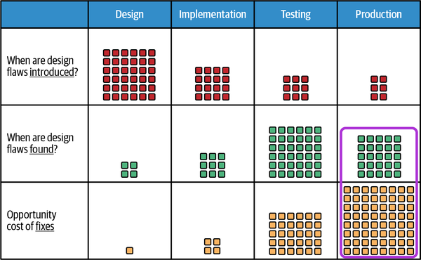
挑战就在这里：如果事后复盘能告诉我们系统设计存在哪些缺口或缺陷，能否把这种学习提前到产品生命周期中成本最低的阶段？至少，能否把学习提前到服务中断之前，从而避免进入危机工程模式？
利用 STPA 在设计阶段预见事件，可以把机会成本降到最低，如图 12-12 所示。我们可以向领导者说明：设计阶段应用 STPA 的边际投入只略微增加机会成本，长期却能产生可观回报。提前避免未来事件成本后，原本用于事后修复的工程资源可以立即转向核心功能开发。最终，STPA 让我们能够用更少的事件换取更多功能。图 12-12
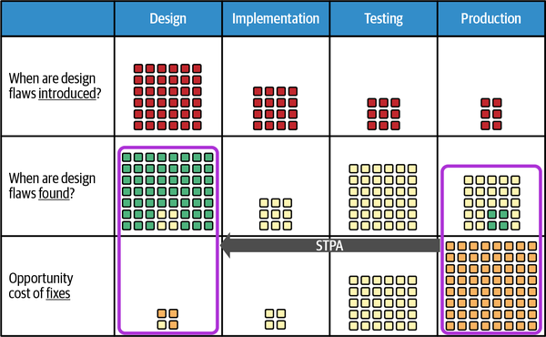
我们的实践也证明，自下而上推动同样有效：与认可 STPA 价值、愿意尝试、之后又向同事和管理者宣传效果的一线贡献者合作。与其推介 STPA 并解释原理，不如展示一次成功分析和一项此前无人发现的重要结论。展示产生影响后，再补充：“顺便说一句，这是用一种很擅长预见复杂系统交互事件的新技术发现的。”随着更多团队了解 STPA 并成功开展分析，需求增长，支持者也更容易找到。开始引入 STPA 时，应先找到创新者——那些立刻看到价值和潜力、想深入学习或在自己的系统上尝试的人。
向他人介绍 STPA 时，你会遇到听说它无效或不实用的人。STPA 的确有学习曲线，成功应用于软件系统也需要投入，但许多常见误解源自在其他行业成立的事实。设计飞机或制造设备等安全关键系统的公司通常依法开展广泛的安全工程和故障分析，也能花一年详尽分析和认证一架将服役多年的飞机。软件行业则以功能开发和发布节奏快著称。好消息是，即使缩小应用范围，软件行业仍能从 STPA 获得巨大收益。下面列出几种常见误解及其澄清：
这种误解可能来自 STPA 最初在航空航天、核电等安全关键行业的应用。这些行业的设计缺陷可能造成人员伤亡，安全分析有严格要求，因此投入数月详尽分析是合理的。除此之外，STPA 项目所需时间主要取决于范围和领域专家能否参与。对于非关键软件和人机系统，可以缩小分析范围来减少耗时，例如只优先分析最关键的不安全控制动作。Google 投资培养了少数 STPA 专家，又通过实践提高效率，已经能在不到一周内、仅由一两名领域专家完成范围有限的 STPA。
STPA 分析之外的领域专家看到结果后，常说识别出的设计缺陷显而易见，这也是后见偏差。经验表明，领域专家参与 STPA、用控制—反馈回路为系统建模时，经常会发现此前未知的设计问题。原因主要有二：第一，关注点从数据流（系统如何实现目标）转向控制不足（系统没有做什么来防止事件），与只关注数据如何流动的传统分析形成有益对照；第二，STPA 能分析人与软件的交互，而传统方法只关注软件部分。人因分析正是发现新设计缺陷的重要来源。
同样，STPA 不一定要做到面面俱到。最后也许只有少数结论，但其中可能包含重大风险。反过来，如果结论很多，集中看到大量薄弱点固然令人不安，却也很有价值：你可能发现，自己一直投入大量资源缓解的已知风险，与新发现的风险相比微不足道。更重要的是，STPA 结果中经常出现这样的模式：一项缓解措施就能消除整类薄弱点。
此外，在设计阶段应用 STPA 得到的设计缺陷往往很容易解决，有时只需小幅修改设计文档或图示。与代价更高的事件响应和事后补救相比，此时完成这些简单修复最节省工程资源。
最后要考虑分析的核心目标：是最大限度了解系统，还是只想尽量减少必须实施的缓解措施？如果目标是学习，得到一份完整的致因及相应措施清单正是预期结果。而且，并非所有措施都必须立即实施：有些可以快速完成，有些则是长期项目。因此，STPA 的产出有助于组织计划和分配资源。
确实，单凭一次教程或课程，不可能把 STPA 做到最高效、最有效；但第一次尝试就能获得收益。本章前述地图数据更新审批分析就是我们早期的 STPA 项目。执行分析的 Google 员工经验很少，耗时虽比成熟团队长，仍然取得成功。学习初期应寻求专家指导，例如 STAMP Institute 的课程和认证，以确保正确遵循方法。首次成功为我们继续在其他领域开展 STPA 提供了动力；此后经验不断积累，如今已能独立分析，并持续提高效率和效果。STAMP Institute
了解常见阻力和反对观点、准备好回应之后，就可以亲自尝试，用结果说服他人。请牢记两点：明智地选择分析对象，并快速试错。
第一次开展 STPA 时，系统和范围选得是否合适，会决定最终得到有影响力的结果还是只有挫败感。根据我们的经验，可以参考以下建议：
不要选择过于简单或已经理解得十分透彻的系统，否则 STPA（乃至任何风险分析）的结论都会显而易见。
应选择曾经出现意外行为或未预见复杂交互、而且很可能再次出现的系统；STPA 尤其擅长分析这类复杂性。
为扩大影响，应先找出系统中值得关注的区域，选择后果严重的部分，例如高风险运行阶段，或你怀疑存在大量“未知的未知的未知”的系统。
选择包含人与自动化控制交互的系统，这通常会得到很有价值的结果。
也可以选择尚在构思或早期设计阶段的系统。STPA 能在系统建成前有效识别安全风险和设计问题。
在启动STPA时，也要铭记“失速”原则。 起步小，作有限度的分析并有两到三个参与者。 如果第一次分析没有产生有趣的结果，你可以很快再运行一次。 一旦你积累了经验，并不断发现新的风险和系统弱点，你可以开始进行更大的分析。最好在一两天后迅速失败，
在确定了CAST相对于传统事后复盘的价值之后，下一步是将其引入一个组织。 这对于具有悠久的事后复盘传统的公司来说可能具有挑战性，因为采用新的分析模式需要组织成本。
在组织中引入 CAST
大规模采用 CAST 的主要障碍，是向领导层说明它相较传统事后复盘的价值。我们用三项指标来推动采用：影响、可扩展性和效率。
CAST 的影响体现在它能发现传统复盘遗漏的深层致因和系统性因素，并据此提出更有力、覆盖更广的改进建议。
把 CAST 与事后复盘的结果进行比较，可以看出 CAST 能揭示更深层的洞见，并提出影响更大的建议。
可扩展性方面，我们通过标准化模板、培训分析人员和建立专家支持机制，使更多团队能够一致地开展 CAST，而不必依赖少数个人经验。
领导者还会关心 CAST 能否在快节奏环境中迅速开展。虽然 CAST 可能比传统事后复盘耗时更长，但我们会在结论和建议形成后立即分享，而不是等最终报告完成，从而快速提供洞见。我们也会提供 CAST 与事后复盘所需投入的描述性统计，以展示两种方法随时间推移的投资回报。
CAST对前面描述的误名城市事件的分析表明，CAST 在时间上更为昂贵，但比传统的事后复盘(见表 12-4)更能提供许多洞察力。 此外，CAST的见解范围比我们单看软件组件时发现的范围要广。CAST找出了导致这一事件的更深层次的系统性问题，使我们能够看到全系统的缺陷和更长期的问题。
| 事后复盘 | CAST | |
|---|---|---|
| 人数 |
3 |
5 |
| 总工时 |
16 |
81 |
| 结论数量 |
6 |
7 |
建议数量 |
8 |
22 |
本章概述了前瞻性的 STPA 和回顾性的 CAST 如何运作，以及 SRE 为何应当关注它们。我们用真实案例展示了这些方法可能带来的影响，并讨论了组织引入 STPA 和 CAST 时会遇到的一些挑战及应对方式。一章的篇幅不足以教会你完整开展 STPA 或 CAST 分析。更多信息请参阅 MIT 系统化安全与保障方法合作项目。
STPA 和 CAST 有望改变站点可靠性工程。正如 Ben Treynor Sloss 在 《The Prodcast》第 3 季第 3 集中所说，STPA 让主动可靠性工作更接近纯粹的工程问题：
“我可以提前告诉你将会发生哪些服务中断，然后由你决定要修复其中多少，又愿意接受多少。”把它变成一种工程选择，实在令人振奋！
我们鼓励你进一步了解并尝试 STPA 和 CAST。即使从很小的范围起步，也能通过加深对复杂系统的理解，并在系统问题引发 事件之前获得修复机会，产生实际影响。